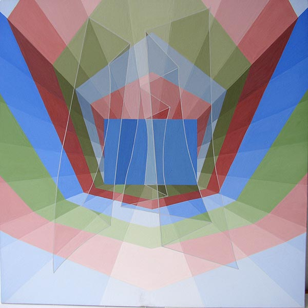
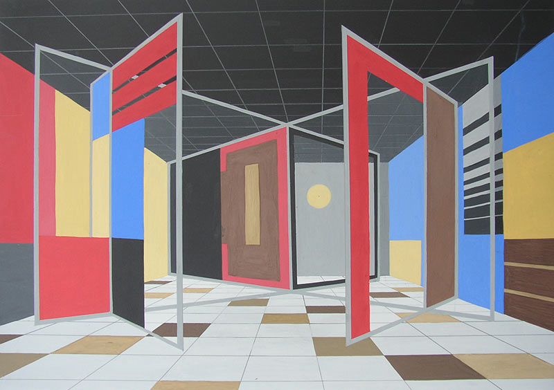
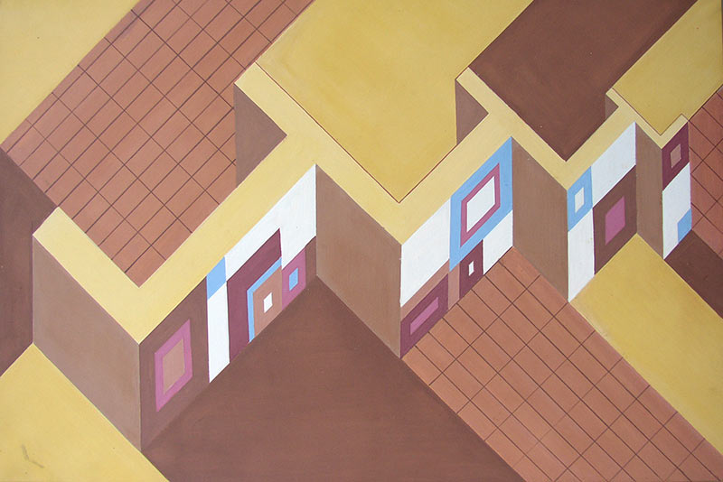
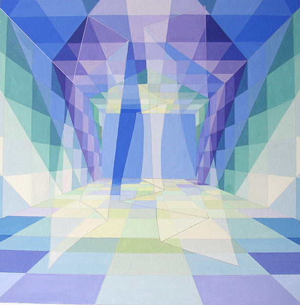
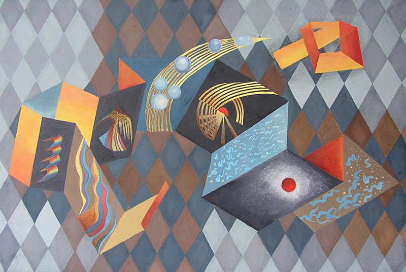
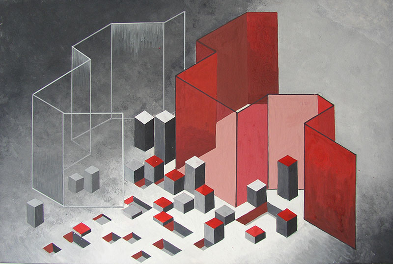
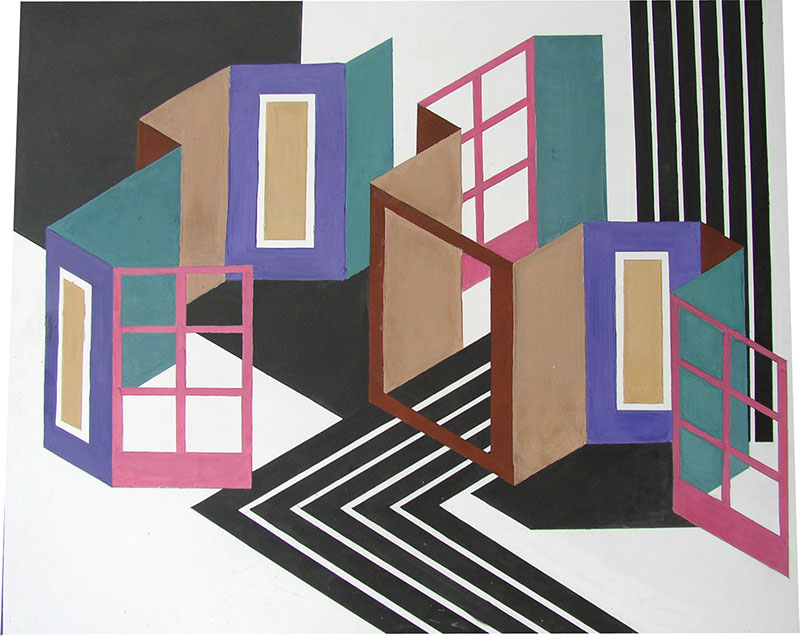

Задание
Цвет в рекламе. Пространство и цвет.
Авторы работ: Латушкина Д., Кузнецова М., Мухамедзинова А., Демковская А., Суконкина О., Гаркун А., Кондакова С.
Просмотр 1 февраля 2006

Трехцветное пространство

Городские ритмы

Улица

Голубое пространство

Космические мотивы

Объем, плоскость и линия

Стены, двери и окна